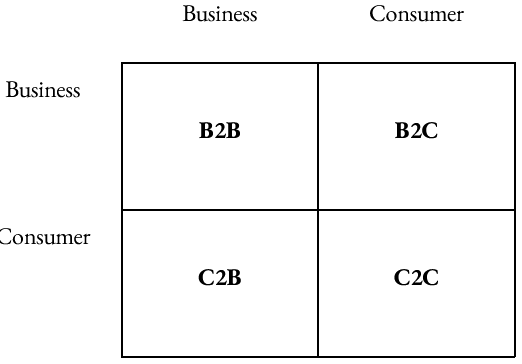

Conducting Business Online
Disruptive Technologies: a new way of doing things that initially does not meet the needs of existing customers.
(ex: Internet, Tesla, iPod, ChatGPT)
Sustaining Technology: improved products/services which customers are eager to buy (better product/service)
Improved models
ARPANET: Advanced Research Project Agency Network. Founded by the US Department of Defense in 1969
The internet is the umbrella (www, email, ecommerce, ebusiness…)
Web 1.0 (Business 1.0)
Refers to the world wide web from (1991-2003) (one way communication/read only)
- Universal Resource Locator (URL): the address of a website/webpage
Before, you had to input the ip of the website
- Hypertext Markup Language (HTML): language that builds language
Before, every company had their own standard language
- Hypertext Transfer Protocol (HTTP): the protocol (standard) used by web browsers to communicate with websites
- Example: firefighters back then, each state had different fire hydrant connections, needed standard for emergency
- Needed in order to make less complicated
- Ecommerce: buying and selling over the internet
.com bubble similar to ai bubble - not profitable right now, once bursts lot of companies will burst - everyone dumping money into new exciting bubble
- Ebusiness: which includes ecommerce along with all the activities related to internal/external business operations
Business Models

- B2B (Business to Business): businesses buying and selling to each other over the internet (ex. Oakland buying laptops from DELL)
- B2C (Business to Consumer): business that sells its products/services to consumers (ex. Amazon, Target)
- C2B (Consumer to Business): consumers that sell its products/services to businesses (ex. Etsy, Freelance workers)
- C2C (Consumer to Consumer): consumers that sell its products/services to consumers (ex. Facebook Marketplace, Ebay)
Advantages
- Expanding Global Reach
- Information Richness: depth and breadth of information
- Information Reach: ability to reach out and communicate with people
- Opening New Markets
- Mass Customization: ability to tailor products/services to their customers’ specifications (ex. custom shoes, t-shirts)
- Personalization: personalize shopping experience based on the taste of the customer (ex. product recommendation)
- Cost Reduction
- Disintermediation: elimination of the intermediaries (distributors and retailers; middlemen) pg 114 in textbook
- Cybermediation: creation of new intermediaries (ex. Expedia, Booking.com, Priceline)
- Low Startup Cost: anyone can start an eBusiness
- Improved Operation
- Faster communication between buyers and sellers
- Improved Effectiveness
Web 2.0 (Business 2.0)
The next generation of the Internet communication/collaboration/sharing (relies on less technical skills, more automated) (two-way communication, read-write interactive)
Advantages
- User Contributive Content (sharing media, reputation systems [reviews], articles)
* Main contributor to web 2.0
- Content Sharing Through Open Source (Android, Firefox, Linux, Wiki)
- Open Source: sharing software with anybody, and if they have tech skills they can use and modify as desired; anything paid can have an open source alternative
- Collaboration Within the Organization: tools that support the work of teams/groups by facilitating the sharing and flow of information
- Knowledge Management System (KMS): system that captures and stores information
- Collaboration Outside the Organization: (ex. crowdsourcing - customers make decisions on next product; Lego)
Drawbacks
- Taxation: not well enforced (ex. Amazon started in 2015-2016)
- Trust: misinformation
- Security: data security/privacy
Web 2.5
The current status of the Internet (AI tools, cryptocurrency)
Web 3.0
Based on intelligent applications where machines create relationships between data and communicate with people and other machines (intelligent search engine) (read, write, and own)
“Own” → you get paid to create content
Semantic Web: describes the relationship between things where machines can understand
Imagine that every single machine/application is smart enough to communicate with each other; “When is the best time to go on vacation with my family?” will go through your calendar, bank info, all your data shared across platforms and give you an answer
Blockchain (stored across multi-computers, anyone can see), NFTs
Since US started project, claimed the domain “.gov” for the highest level, other countries use their country abbreviation. Began as small lines between universities, expanded out, increased overtime. Cables are run through oceans in order to connect to the internet of other countries/regions. If wires are cut, neighboring countries redirect through themselves.